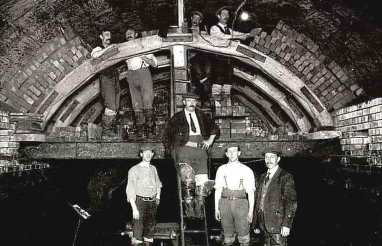
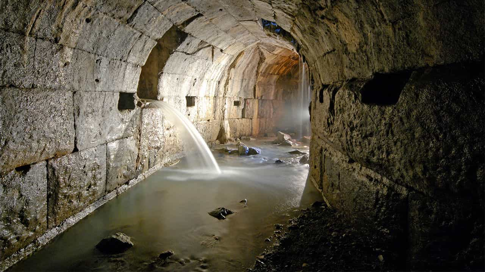
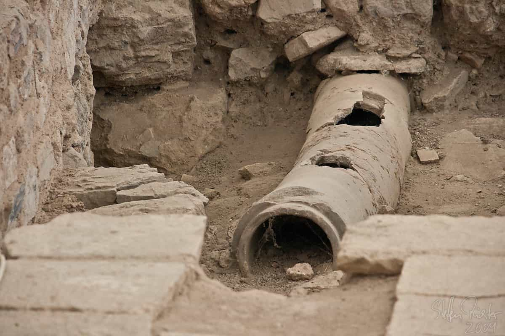

Johannes senses evil afoot in the West, but is trying his best to enjoy the decline.


“That’s the trouble with everybody – you’re all so bored,” rants Johnny, the protagonist of Mike Leigh’s 1993 film Naked. “You’ve had nature explained to you and you’re bored with it, you’ve had the living body explained to you and you’re bored with it, you’ve had the universe explained to you and you’re bored with it. So now you want cheap thrills and like plenty of them, and it don’t matter how tawdry or vacuous they are as long as it’s new, as long as it flashes and fuckin’ bleeps in forty fuckin’ different colors.”
Twenty-five years on, he would surely feel even greater despair over today’s hyper-speed world of digital distraction, hedonism, and increasingly short-lived fads. We are drowning in escapism—in engineered fun and novelty—and we’ve completely lost touch with how we got here. To borrow from Peep Show’s Mark Corrigan, another fictional character who gets the absurdity of our modern condition, we’re crushing candy, quoting Shakespeare, and hiding in the toilets of our own homes. It’s the confused high point of Western civilization.
Over thousands of years, great men—thinkers, engineers and scientists—gradually figured out what makes a mass-scale society function smoothly. At some point we reached such a level of mastery that millions could all but escape from reality, their basic needs met through little to no toil of their own. We now live among hordes of zombified consumers who—diverted by fidget spinners and Facebook feeds—seemingly give no thought to the blood, sweat and tears that went into building this bizarre utopia.
Are you one of them? Well, if you’re not sure, consider this. Every day, whenever you want, you turn a tap for water to begin rushing out at the exact temperature and speed you desire. Have you ever given this a second thought? Have you ever wondered for more than a few seconds where all that technology came from, or how people managed before it existed?

We’ve come to think of state-of-the-art plumbing and freely running water as luxuries we are owed simply for the virtue of being born. We pay taxes for water infrastructure, sure, so when something goes wrong with the pipes we get angry about it. But when all is well, as it basically always is, we lose all regard for the headaches of the huge invisible industry that exists to serve us with our most fundamentally-required element in the cheapest and most convenient way possible.
And that does plumbers, the unsung heroes of modern society, a great disservice. We must remember that civilizations that had the best plumbing also tended to be the most prosperous, be it the stone rainwater channels of Mesopotamia, the wells of Ancient Egypt, the lead pipes of Ancient Rome, the sewers of Victorian London or the spectacularly complex plumbing networks of today’s techno-cities.
A society cannot squabble and bullshit its way out of a plumbing predicament. It must roll up its sleeves, think, lay out its plans and act as one rational unit if it is to succeed. That’s what the Babylonians did when they made the first clay sewer pipes in 4000 BC, and it’s what the Minoans did in 2600 BC when they figured out flushing toilets and pressurized showers.
And it’s what the Romans did when they built Cloaca Maxima—the Greatest Sewer, constructed around 600 BC—which carried waste to the River Tiber. “The extraordinary greatness of the Roman Empire manifests itself above all in three things: the aqueducts, the paved roads, and the construction of the drains,” wrote Dionysius of Halicarnassus. When Rome fell, much of the progress it made in plumbing went with it, and the disastrous effects played out for centuries to come.

The Black Plague killed hundreds of millions poisoned by their own filth, and it wasn’t until the Renaissance that signs of a plumbing revival surfaced. In 1596, Sir John Harrington, Queen Elizabeth’s godson, designed the forerunner to the modern flushing toilet, later improved upon by Scottish inventor Alexander Cummings in 1775. Meanwhile in 1664 France, a 15-mile cast iron pipe main—still in operation today—ran 15 miles between a pumping station in Marly-on-Seine and the town of Versailles.
The massive growth of cities during the Industrial Revolution put great pressure on the plumbing systems of the time, with streets becoming disease-ridden cesspits. London was the first to take decisive action after the Great Stink of 1858 when civil engineer Joseph Bazalgette led the construction of a vast intercepting sewer system that diverted waste downstream to the Thames Estuary.
With that foundation set, the US steamed forward in the 19th and 20th centuries to become the unrivaled innovator in plumbing as the modern kitchen and bathroom went from luxuries once reserved for the well-off to something enjoyed by virtually everyone living in developed society.

Plumbing has come a long, long way, but now that everything is so easy, we overlook its magnificence and its significance. In our ‘smart cities’ and our ‘connected homes’, we consider it something rudimentary, and have turned our attention elsewhere. In the US, Vox reported last May, federal funding for water infrastructure has dropped from more than 60 percent in the late 1970s to just 9 percent today. It’s symbolic: America’s pipes are disintegrating alongside its moral values and sense of identity, and the solution will be to replace them with untested, potentially toxic plastics, just like a once-great culture is being replaced with something equally second-rate and superficial.
A prophetic 2000 article, The History of Plumbing and its Meaning Today, warned of America’s crumbling water infrastructure, now revealing itself in the Flint crisis and beyond. “We assume clean drinking water and safe, sight-unseen waste disposal in every private and public building,” wrote the anonymous author.
“We take for granted the sanitation, hygiene and convenience provided by indoor bathrooms. What the American plumbing industry has accomplished in the last couple of centuries will cause historians of the future to marvel, just as we do over the ruins and artifacts of the Roman Empire.”
But if we continue to ignore that which makes our lives so comfortable and instead let our collective consciousness wander further toward triviality, hysteria and decadence, ruins and artifacts are what our glorious plumbing systems might—along with everything else we’ve built—become sooner than we’d hoped.
As American activist John W. Gardner noted: “The society which scorns excellence in plumbing because it is a humble activity, and tolerates shoddiness in philosophy because it is an exalted activity, will have neither good plumbing nor good philosophy. Neither its pipes nor its theories will hold water.”
Read More: What The West Can Learn From India’s Checkered History